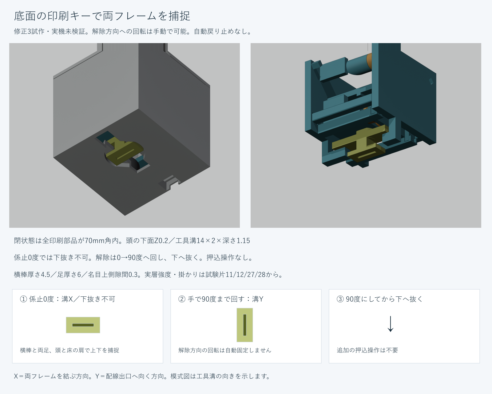
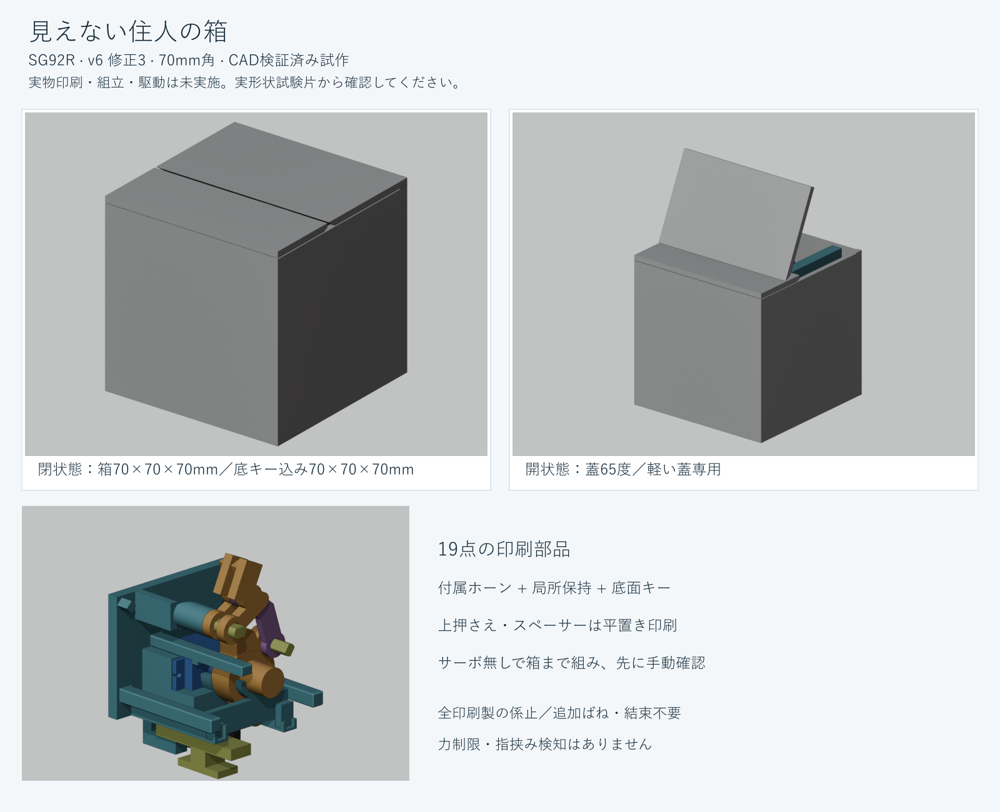
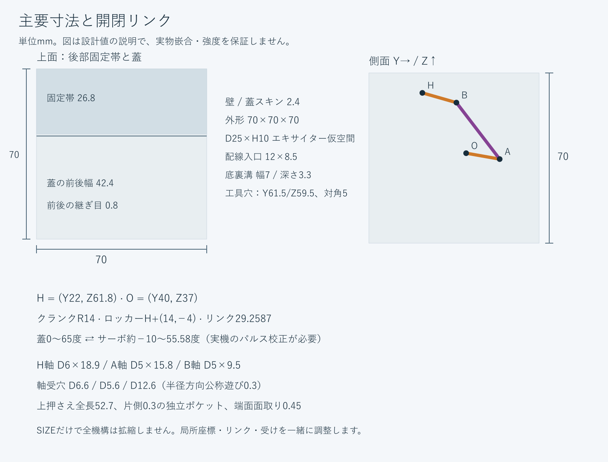
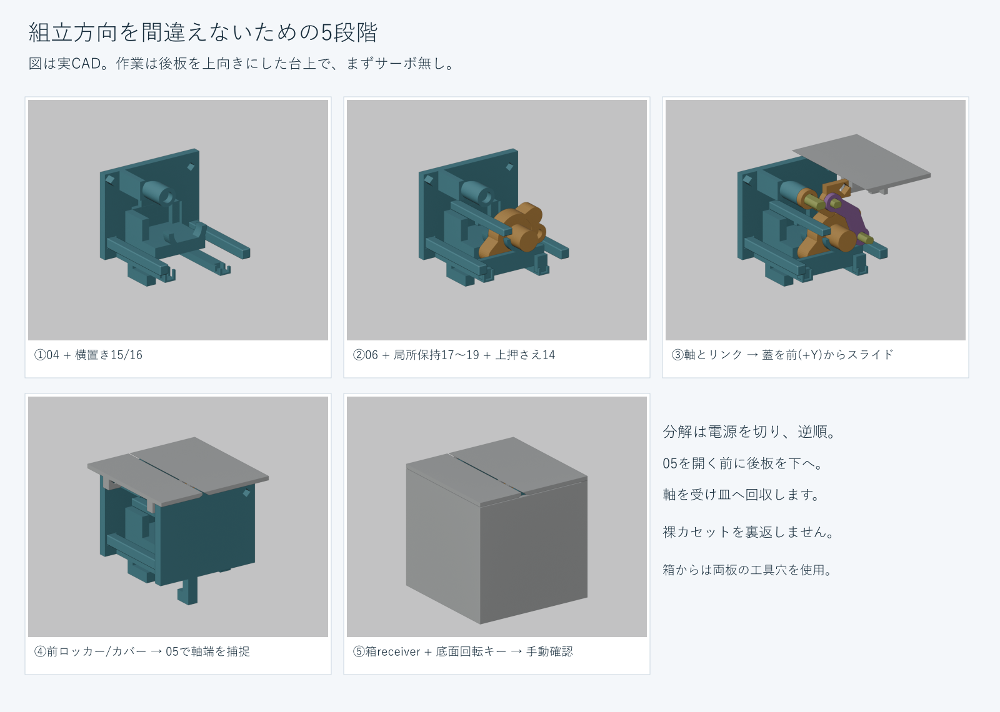
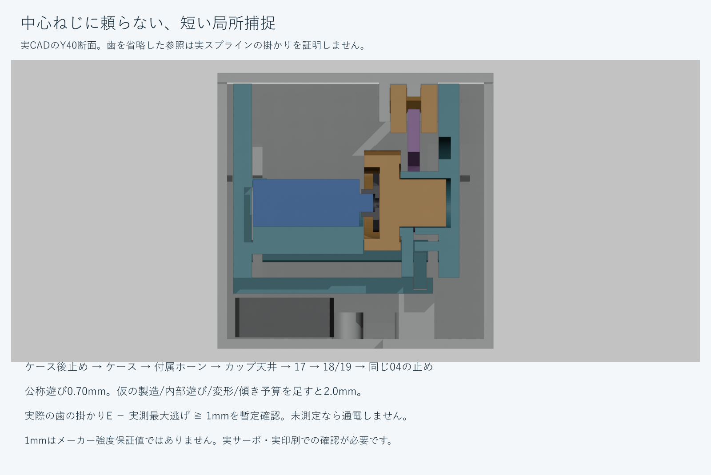
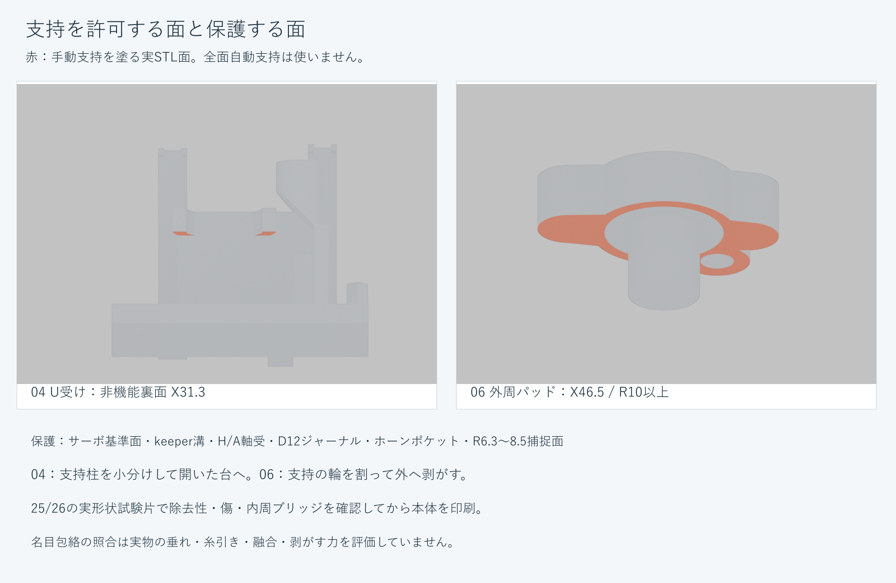
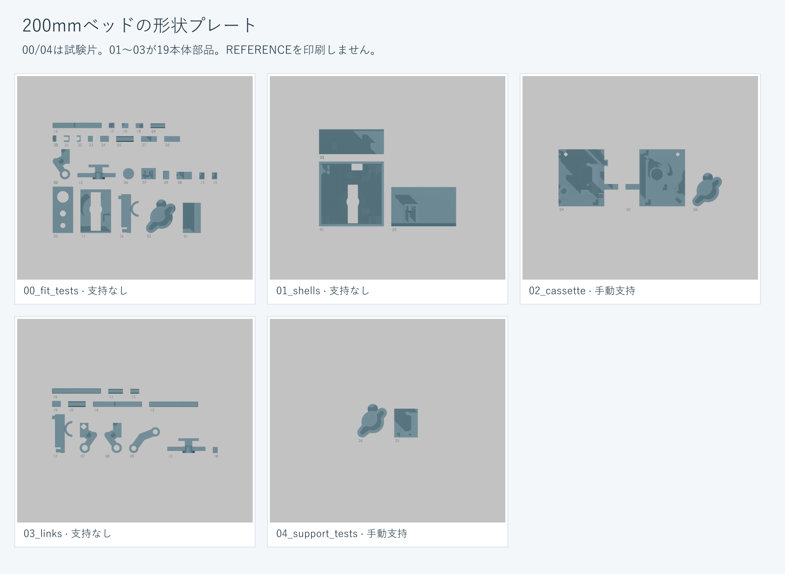
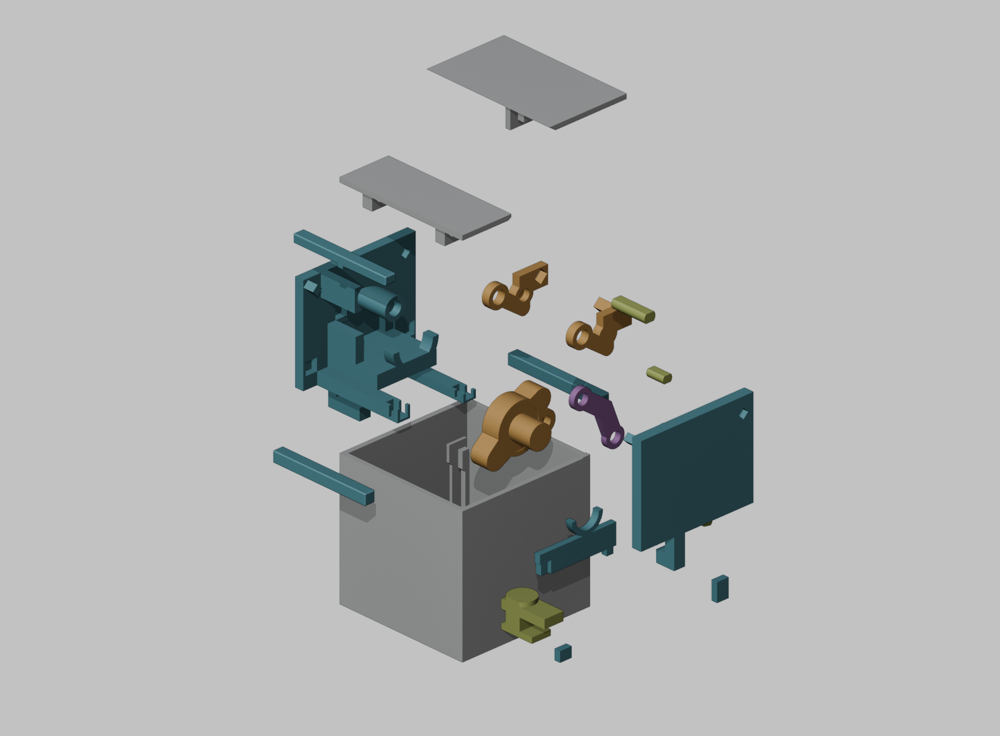

CAD検証済みの試作。実物印刷・通電未実施。








見えない住人の箱 — SG92R 開蓋デモ v6 修正3
親レビュー用CAD試作。実物印刷・組立・通電は未実施です。
1. 寸法と条件
本体と閉じた蓋は70×70×70mm。側面は無地でキーの突起や穴を除きました。底面に配線溝とキー用の操作窓があります。底面キーの頭は0.2mm内側に収まります。開閉は0〜65度。承認済みSG92R参照を使う試作で、SG90や互換品がそのまま適合する保証はありません。
サーボの参照はケース23×12×22mm、耳32×12×2mm、穴ピッチ28.84mm、ホーン34×17mm／腕幅1.5mm。写真からの推定と元モデルの値をreferenceに保存しています。新たなメーカー保証値として扱いません。独自スプラインを印刷せず、実サーボと付属ホーンを使用します。実際の歯の掛かり、ハブ・耳・配線・前後遊びを現物で確認してください。
2. 印刷する19部品
stl/はmm単位、印刷姿勢・Z=0を設定済みです。
01 箱本体：stl/01_body.stl ×1
02 後部固定カバー：stl/02_fixed_rear_cover.stl ×1
03 平板蓋：stl/03_planar_lid.stl ×1
04 後板・サーボ台・局所レール：stl/04_main_cassette.stl ×1
05 前板・軸受・ストッパー保持棚：stl/05_front_closure.stl ×1
06 付属ホーン用カップ／D12ジャーナル：stl/06_horn_cup_journal.stl ×1
07 後ロッカー：stl/07_rear_rocker.stl ×1
08 前ロッカー／一体ペグ：stl/08_front_rocker.stl ×1
09 曲線リンク：stl/09_link.stl ×1
10 H軸 D6×18.9：stl/10_hinge_axle.stl ×1
11 A軸 D5×15.8：stl/11_drive_axle.stl ×1
12 B軸 D5×9.5：stl/12_link_axle.stl ×1
13 底面回転キー：stl/13_body_cross_key.stl ×1
14 独立サーボ上押さえ：stl/14_servo_top_keeper.stl ×1
15 前スペーサー：stl/15_flat_spacer.stl ×1
16 後スペーサー：stl/16_flat_spacer.stl ×1
17 局所カップ保持具：stl/17_local_cup_capture.stl ×1
18 前ストッパー：stl/18_local_capture_stop.stl ×1
19 後ストッパー：stl/19_local_capture_stop.stl ×1
部品13は厚い横棒と底の角形頭が一体のキーです。04/05にはキーが掛かる足を一体化しました。14〜19は修正2で加えた保持具を継続しています。修正3の部品だけで組み、他の版と混ぜません。
coupons/には28個の実形状試験片、plates/には200mm級ベッド用の5枚の形状3MFがあります。試験片は全てを必ず追加組立する部品ではありません。適合するキー・軸・保持具等は本体へ再利用できます。
3. 追加の物と工具
必要なのはSG92R、付属ホーン、制御基板、適切な外部サーボ電源と配線です。機械部分に市販のばね・結束バンド・ねじ・金属ピンを要求しません。任意の振動スピーカーはD25×H10mm、接着層0.5mmの仮空間を底X17/Y45に確保しました。コーン用バッフル・音孔、基板/アンプ固定、端子や音響の設計は未実施です。
ノギス、先細ピンセット、2mmL字フック2本、キー溝に軽く入る既存の薄い平工具、8mm以上の柔らかい台を使います。仮組中は両板を支えます。仮止め帯を使う場合も常設の機械部材ではありません。キー溝は14×2mm、深さ1.15mmで、工具をてこにして大きな力を掛けません。
4. 試験片と印刷
00は支持無しの26試験片、04は手U受け25とカップ26の支持除去試験です。11は底の実回転座と挿入窓、12は実キー、27/28は左右の保持足です。床座とキーを手で回し、次に両足を含む全カセットを箱に入れて掛かりを確認します。無理な圧入、穴の貫通化、支持面を削って合わせる方法は使いません。
Bambu Studio2.3.1.51、X1 Carbon0.4mm、PLA、0.20mm層、壁4周、上下5層、充填20%をオフライン確認用に選びます。実プリンター用の設定保証ではありません。04/06だけ指定面へ手動支持。独立支持層高は無効、Z間隔0.2、XY0.35mm。保護するのは軸穴・盲穴床・ホーンポケット・保持環・keeper受け等です。底キー座の橋渡し、長いキーと保持足の反り/層強度も試験片から確認します。
25/26で支持を少しずつ割って開いた側へ外し、機能面に工具を当てないでください。06の保護面へ支持の投影が接近するところは約0.5mmの上下間隔です。名目吐出包絡の非交差は、実際の融着・支持除去・表面精度を保証しません。
5. サーボ無しで組立
①後板04を下にし、8mm以上の柔らかい台で支えます。15/16を04へ入れます。
②06を入れ、17を軸方向から両足溝へ入れます。18/19を落として抜け止めを作り、14を入れます。17だけを片足で曲げません。
③H軸10、後ロッカー07、A軸11、リンク09、B軸12を順に入れます。蓋03を前(+Y)から後ロッカーの屋根ペグへ滑らせます。
④前ロッカー08を軸方向から入れ、屋根ペグ・B軸を受けます。カバー02を入れ、05を前から滑らせて軸端、14〜16、18/19、カバーペグを捕捉します。両板を支えて閉状態へ戻します。
⑤完成カセットを箱01のreceiverへ上から下ろします。底の荷重支持パッドと新しい保持足の座りを確かめます。箱を起立させたまま、高さ40mm以上の柔らかい2台で左右端を支え、底中央を空けます。蓋を閉じ、底からキー13を入れます。キーを入れる前の箱を裏返しません。挿入時は横棒をY方向（90度）、底の工具溝もY方向にし、頭が底のくぼみへ届いてから0度まで90度回します。係止時は横棒と工具溝がX方向です。回転端へ軽く当てるだけにします。
底の角形頭と床の肩、横棒と両足が上下の抜けを止めます。キーはばねで戻さず、逆方向の90度回転は手動解除として残します。角度の自動固定、輸送/振動で戻らないことは未検証です。動作中は底キーへ触れず、使用前にX方向の溝と両板の座りを確認します。輸送用のロックとして保証しません。
⑥箱・カバー・05・底キーまで揃え、蓋を支えながら0〜65度へゆっくり手動で往復します。軸の抜け、保持足の浮き、接触、たわみがあれば通電しません。
6. 分解とサーボ校正
電源を切り、箱を同じ2台で水平に支え、底キーを90度へ戻し、下へ抜きます。キー解除後も箱を裏返しません。蓋を約65度で支え、内側から04/05の工具穴Y61.5/Z59.5（対角5）に2mmLフックを差し、両板を一緒に持ち上げます。蓋やリンクだけで持ち上げません。実工具の曲げ・握り・引張り強度は未確認です。
取り出したカセットを後板04が下になる台へ戻してから05を外します。軸を受け皿へ回収し、取付の逆順で分解します。裸のカセットを裏返しません。
単体サーボを無負荷で校正して電源を切ります。ケースと配線を04の上から入れ、付属ホーンを軸方向へ座らせ、06をかぶせます。ホーン付きケースを押し込む方法やサーボの無理な逆駆動は行いません。閉状態のホーン長軸は+Yから+Zへ35度、18mm腕が後下・16mm腕が前上です。歯の割出しで姿勢が変わるので実物で合わせます。
7. 配線と遅い開閉デモ
底の入口X35〜47/Y60.5〜69は12×8.5mm。D3/R6ケーブル包絡と8×5×15コネクターの通過を確認します。ラッチや端子は未モデル化です。コネクターを通してから箱の中で線を滑らかな2本のガイドへ置き、十分な余長を残して底の幅7/深さ3.3mm溝から後へ出します。ガイドは引掛かりを減らす位置案内で、引張りクランプの強度を保証しません。配線を引っ張ったり蓋の可動域へ置いたりしません。
設計上のサーボ角は−10〜55.58度ですが、固定パルスへ直接変換しません。slow_open_demoは未校正ではattachせず、単体で実測した3つのパルス幅を設定してから使う参考です。実ボード未指定・未コンパイルです。初めは蓋1〜63度程度の狭い範囲で校正します。
サーボはGPIOから給電せず適切な外部電源と共通GNDを使います。遅く動かしても停止トルクは制限されません。前縁・ヒンジ・リンクに指を入れず、唸り/停止/接触で直ちに電源を切ります。力制限・指挟みセンサーはありません。電源断で蓋が閉じることに注意します。
8. 検証と未確認
メッシュ、131姿勢、19組立経路、底キーの挿入/回転/引抜き止め、工具と配線の名目包絡を検査します。逆経路は同じ幾何経路です。参照の滑らかな軸/穴の接合部3ケースは別記し、実際のスプライン係合と区別します。支持は実スライスの通常/接触層/移行層を層高・幅付きで照合します。検証記録と修正対応はQA_SUMMARY/REVIEW_RESPONSEに載せます。
PLA密度1.26の均質全充填計算で動く蓋/ロッカー/B軸は約13.37g、重力だけの保守的トルク上限約0.071kgf·cm。5MPa仮許容/25N等の単純梁計算は材料・層接着・ノッチ・疲労や実サーボの停止荷重を評価していません。軸の実掛かり・最大遊び・支持パッドへの座りを現物で確認します。
実物印刷、嵌合、支持除去、歯の掛かり、工具の操作、配線ラッチ/引張り、電源/駆動、耐久/振動は未検証です。実機で組める保証はありません。
9. 編集
editable_cube_v6.blendとparams.py/model.py/cad_utils.pyはBlender5.1.1で再生成できるCADです。params.pyはメートル、局所構造はmm。BOTTOM_KEY_*、FIT、RUNNING、EXCITER_*等を調整できます。SIZEだけで全機構を拡縮せず、受け・軸・リンク・蓋座標も一緒に調整して検証を再実行します。
model→make_coupons→make_plates→audit_all、verify_motion、check_assembly_revision、verify_key_cable、verify_tool_access、verify_revision_capture、offline slice→check_support_revision、render→make_docs_revisionが現行手順です。既存ポートフォリオ/v5/承認参照には触りません。修正2は旧版として履歴保存、修正3試作・実機未検証としてLibraryへ保存します。保存と最終承認は別で、ユーザーへの受け渡しは親レビュー後です。